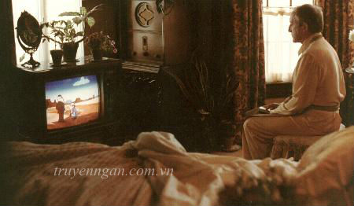

Chiếc ti vi trong nhà luôn bật, tiếng vọng lại giữa những gian phòng. Từ tiếng người dẫn chương trình cà phê buổi sáng đến phim truyện buổi trưa, tiếng biên tập viên thời sự lúc 19 giờ đến những trận bóng đá khuya, tiếng ti vi lúc nào cũng văng vẳng trong nhà. Và người luôn ngồi trước chiếc ti vi là ông tôi.
***

Home > Truyện Ngắn > Gia đình > Người ngồi trước vô tuyến
NGƯỜI NGỒI TRƯỚC VÔ TUYẾN
Chiếc ti vi trong nhà luôn bật, tiếng vọng lại giữa những gian phòng. Từ tiếng người dẫn chương trình cà phê buổi sáng đến phim truyện buổi trưa, tiếng biên tập viên thời sự lúc 19 giờ đến những trận bóng đá khuya, tiếng ti vi lúc nào cũng văng vẳng trong nhà. Và người luôn ngồi trước chiếc ti vi là ông tôi.
***
nguoi-ngoi-truoc-vo-tuyen
– Cháu chào ông. Hôm qua chung kết Euro Ronaldo thắng chứ ông?
– Thắng chứ! Giữa hiệp 1 cu cậu chấn thương, ra khỏi sân nằm chỉ đạo, mà Bồ Đào Nha vẫn thắng đấy.
Tôi cười. Ông chưa từng bỏ lỡ những trận bóng đá ban khuya, cũng không bỏ lỡ cà phê buổi sáng, những bộ phim khung giờ vàng ông đều xem, hết thì còn sang đến kênh Thuần Việt. Hàng xóm bảo: "Ông già này nghiện ti vi ghê. Lúc nào cũng thấy ông già ngồi xem."
Ông già vẫn hằng ngày ngồi trước ti vi xem hết kênh nọ đến kênh kia. Ông già thuộc toàn bộ khung giờ các chương trình ông thích, thậm chỉ còn biết những Scandal Showbiz nhanh hơn giới trẻ. Người ta biết ông già nghiện ti vi nhưng ít ai biết ông già không đi được, những cơn đau kéo dài cả ngày đêm, ông già đành xem ti vi cho quên đi cái đau.
Nếu nhắc đến bệnh của ông thì vừa thương mà cũng vừa giận. Ông bị Gout, nguyên nhân dẫn đến là thừa đạm, khiến các khớp xương sưng lên, lâu dần sẽ hóa mủ. Bệnh cũng lâu rồi, vào cái tầm tuổi trung niên, ông đã bị rồi. Đã thế suốt những năm tháng ở khu Lán Tháp bụi than đá, rõ là có bệnh viện đàng hoàng, nhưng ông già lại tin lời của cha lang băm.
Cha kêu: "Bệnh này của ông, phải ăn chân chó ninh với đỗ xanh, ăn nhiều mới khỏi được"
Ông tin sái cổ. Từ đó mà bao năm trời, ông cứ giã chân chó với đỗ xanh. Thậm chí kén rể cũng bằng chân chó nấu giả cầy với đỗ xanh. Đến lúc chân ông sưng lên thành mấy cục, nhiều khi đau đến nỗi phải lê dưới đất, ông mới dừng ăn chân chó và thầm chửi cha lang băm. Thế mới bảo, bệnh của ông già, vừa thương mà lại vừa bực.
Người ta bảo bệnh này phải kiêng. Nhưng ông già có chịu kiêng cữ gì đâu, món nào ông thích ông đều ăn kịch liệt. Mà mấy món ông thích toàn thịt, cá, chân giò giả cầy, đạm nhiều phải biết. Mấy cục bướu thì sướng lắm, ăn nhiều tăng trọng, cứ thế lớn như phù đổng. Ồng già cứ vừa ăn vừa tặc lưỡi: "Đời sống được mấy!"
Quả nhiên đời sống được mấy thật, ông già cũng chẳng sống được mấy nữa.
Vài ngày nay, người ta không nghe thấy tiếng ti vi vẳng ra từ phòng ông già nữa. Nhà cửa cũng vắng vẻ, bà già bình thường hay quét sân lúc 6 giờ cũng chẳng thấy đâu. Lá mít rụng đầy sân.
Người ta kháo nhau ông già đi viện rồi. Quả thực thế, ông già lên viện rồi. Ngày trước ông già cũng lên viện vài lần để nặn mủ, nhưng cũng độ một, hai tuần là về. Lần này cũng một tháng rồi.
Tôi, thân là cô cháu ngoại, con của cô út nhà ông già, từ ngày đỗ đại học là ở rịt trên thủ đô. Dăm bữa mới về một lần, mà lần nào về việc thiết yếu cũng là lên thăm ông. Ngày trước muốn nghe giọng ông già là cứ phải về mới nghe được, cơ mà từ ngày ông được cậu ba mua cho chiếc điện thoại Asus cảm ứng, muốn nghe giọng ông già cứ gọi điện về là được. Vậy là ngoài thú vui xem ti vi, ông già giờ rảnh rang là lại gọi điện cho các bác, các chú ở quê, từ chuyện sang cát cho bà đến bốc mộ, rồi chuyện cái Thơm, cái Thảo, giọng sang sảng cả tiếng đồng hồ xen lẫn vài tiếng khịt mũi đặc trưng. Ông già cứ chọc chọc màn hình cảm ứng rồi than: "Điện thoại gì mà mấy cái nút nhỏ tí, khó ấn bỏ cha". Cớ sao khó ấn, chẳng phải do ngón tay ông già u cục sừng sỏ to gấp hai, ba lần ngón tay bình thường hay sao.
Dạo gần đây, tôi bận nên không gọi điện về cho ông già, cứ thấy nhớ nhớ. Rồi thì chộn chạo trong lòng, gọi về cho ông già, thì ra ông già lên viện. Giọng qua chiếc loa Iphone 6 sao khó nghe thế cơ chứ.
Bụng nhủ thầm: "Đã bảo là ăn chân giò ít thôi, giờ lên viện rồi!"
Rồi thì trước mắt nhòe đi. Chẳng khóc đâu, cứ thấy lành lạnh thế thôi. Vậy là thân cháu ngoại, tôi thân chinh đáp chuyến xe sớm nhất về thăm ông già. Mỗi lần về, muốn lên thăm ông già là phải đi qua đoạn dốc thoai thoải, rồi leo mấy chục bậc thang theo thiết kế gọi là phong thủy của cậu ba. Hết hơi leo được đến nơi, thấy bóng dáng thẳng tưng trước ti vi của ông già, thỉnh thoảng lại vài ba tiếng khịt mũi, liền khua tay cười hi ha:
– Cháu chào ông.
– Linh Sún đấy hả? Về lâu chưa cháu?
Úi chà, người ta con gái 20 tuổi đầu rồi, Sún gì nữa. Quá khứ của 15 năm trước, chẳng hiểu sao bây giờ vẫn gọi.
– Dạo này Người phán xử đến tập bao nhiêu rồi ông?
– 20 rồi. Mà dạo này thấy "Sống chung với mẹ chồng" hấp dẫn hơn, bà Lan Hương đóng mấy vai hiền tài thế mà vào vai này gớm ghê kinh.
Tôi vắt vẻo chân trên thành ghế, nhai lạc rang sồn sột. Ông già thích ăn lạc rang lắm. Trộm vía chân tay đau cả năm nhưng ông già được bộ răng trời phú thật, lạc rang, mía, cùi dừa, kẹo lạc cứ nhai cành cạch. Mà lạ kì nghe ông già nhai, tiếng phát ra cứ muốn nghe hoài, hay lắm.
– Hôm nay nghe nói bão ngoài biển chết cò, nhưng có đoàn khách Trung Quốc tấp bờ vội, đông lắm. Bảo mẹ mày chuẩn bị đón khách, chứ tí nữa đông lắm đấy.
– Làm gì có tàu nào ông, có thì mẹ cháu đã bảo.
– Ơ, ti vi vừa nói xong. Không tin gọi điện mẹ mày xem.
Ông già nói chắc nịch. Tôi tí gọi cho mẹ thật, rồi thấy ông già cười khà khà. Đoán ngay ông nói đùa, cứ lấy bệnh tham "Mao Trạch Đông" của người mẹ đáng kính của tôi ra làm trò đùa. Ông già kì lạ, mà căn phòng của ông già cũng kì lạ. Tiếng ti vi văng vẳng cùng mùi cao dầu len lỏi cả căn phòng, lần nào cũng dễ dàng đưa tôi vào giấc ngủ.
Ấy vậy, giờ không leo lên mấy chục bậc thang của cậu ba lại thấy lạ. Đi thang máy đỡ mỏi chân thật đấy nhưng kể ra leo vài chục bậc thang kia vẫn an lòng hơn. Mà kể ra cái bệnh viện này cơ sở vật chất tốt thật nhưng có cái thang máy hơi khập khiễng, đi lên dễ khiến người ta thấy bất an.
Bất an là vậy nhưng khi mở cánh cửa phòng bệnh ông già lại thấy nỗi bất an thêm vạn phần. Người ông già nhiều dây quá, mà cắm nhiều chỗ thế kia, ông già chịu được cũng tài.
– Cháu chào ông. Dạo này Vtv3 có phim gì ở khung giờ vàng rồi ạ?
Chỉ 3 giọt và cô ấy sẽ không để bạn ra khỏi giường!
Ợ hơi? buồn nôn? viêm loét dạ dày? không cần 1 viên thuốc tây
Một cái gì đó nghèn nghẹn dâng lên. Vốn dĩ ông già sẽ phải trả lời tắp lự rằng bộ phim đang làm mưa làm gió hiện nay là Ngược chiều nước mắt chứ. Ấy vậy mà ông già cứ lặng im, đôi môi khô cong nứt nẻ còn chẳng nói được tên cô cháu ngoại lắm mồm này.
– Đã bảo ông ăn thịt ít thôi, kiêng cữ vào! Ăn như vậy sao không lên viện.
– ...
Đáng nhẽ ông già phải bảo: "Đời sống được mấy". Ấy vậy bây giờ vẫn là một khoảng lặng im. Đã vậy đây cũng không thèm nói nữa, chuyện gì mà cứ độc thoại được mãi.
Nói vậy mạnh mồm chứ có biết nói gì đâu. Nhìn ông già thương lắm. Cái ống Morphin to đùng chuyền giảm đau, vài chai lọ trên cây rồi mấy cái dây loằng ngoằng, dứt bớt cho ông già đỡ khổ.
Giờ thì ông già ăn được cái gì đâu. Vài miếng cháo rồi lại thôi, cố cho ông uống nhiều nước để lọc thận tốt mà cũng chẳng buồn uống. Đến giờ rồi mà vẫn thấy bực ông già.
Bác sĩ bảo tội do ông già cứ đau rồi uống nhiều giảm đau quá, giờ nó phá hết phổi với nội tạng rồi. Cứu thế nào được nữa. Cái tật giã thuốc giảm đau như giã chân chó ninh đậu xanh của của ông già bảo mãi rồi nhưng nào có nghe. Nhưng mà đau quá, đau mãi người ta chịu thế nào được.
Rồi thì ông già cũng chẳng chịu, cách nào đỡ đau là ông già thử hết. Thành ra ông già ngủ ngồi mất mấy hôm. Lưng cứng đờ rồi, cũng chẳng trêu được cô cháu ngoại này nữa.
Ở nhà được hai hôm, tôi lại xách va li lên thủ đô. Tôi không có nhiều ý niệm về chuyện bệnh của ông già sẽ khỏi, nhưng tôi nghĩ ông già đã bao nhiêu năm như vậy rồi, lần này chắc cũng vậy thôi.
Ấy vậy mà mới lên hôm trước, hôm sau đã nhận được tin ông già phải chuyển lên viện tuyến trên. Giọng người mẹ đáng kính qua ông nghe rè rè, lúc được lúc mất, chỉ nghe tiếng nấc nghèn nghẹn đến đau lòng.
Ngày hôm ấy, thủ đô mưa lất phất. Tiếng rộn ràng ở Bạch Mai chẳng bao giờ kết thúc cả. Chỉ có người nhà tôi câm lặng giữa quang cảnh ấy với một đống đồ đạc, với những chiếc khẩu trang chuyền tay nhau để vào phòng cấp cứu với ông già.
Lúc này, tôi mới thấy mất mát.
Ông già tồn tại giống thói quen. Từ khi biết nhận thức, ông già đã ở đó, ngày ngày bế con bé động tí là khóc nhè này. Con bé còn có tật khó ngủ, ông già cứ phải cho vào giọ xe, đạp một vòng quanh thị trấn bụi than, con bé mới chịu ngủ lăn lóc trong chiếc giọ ấy. Ấy vậy, ông già của con bé, giờ đến cả thở còn khó đến vậy.
Phòng cấp cứu chật như nêm, bác sĩ đi ra đi vào, người nhà bệnh nhân đứng đông quá cũng chẳng còn sức mà quát. Tôi đâm sợ, sợ cái cảm giác gai góc của bệnh viện. Cảm tưởng rằng nơi này có thể cướp đi ông già của tôi vậy.
Nhưng nó cướp đi ông già của tôi thật. Chỉ vỏn vẹn một tháng, tròn một tháng ngày nào tôi cũng lên với ông già, ông già biến mất khỏi cuộc đời tôi mãi mãi. Ngày ông già đi như cả thế giới đen đi. Đen như chiếc màn hình ti vi đã tắt ngúm vài tháng nay ở căn phòng ông già vậy.
Những ngày cuối cùng, ông già không ăn được gì nữa.
"Bây giờ, muốn ăn chân chó với đỗ xanh cũng không được rồi"
Nhưng giờ đây ông già bình dị quá, chỉ thèm những thứ đơn giản như dưa chuột, trà xanh, sữa, vậy mà cũng chẳng uống được.
"Đời ăn được mấy"
Bây giờ thì đúng là không ăn được rồi.
Ông già của những ngày cuối thật khổ. Nhưng khoảnh khắc ông già đi người ta lại thấy nhẹ lòng hơn. Ông già sống mấy chục năm đã đau như vậy rồi, sống thêm lại đau thêm vài cái mùa xuân nữa. Khổ ông già.
Ông già ra đi bình yên chẳng giống cách ông già sống. Lúc trước ông già ồn ào lắm, ngồi yên một chỗ nhưng cáu lên là chửi um nhà um cửa, mà ông già chửi khó nghe lắm. Như người mẹ đáng kính của tôi bảo là chửi kiểu người có học thức. Ngớt cơn chửi thì ông lại khà khà vỗ đùi khen cô Lan Hương diễn hay quá, rồi thì những tiếng "Vào" ào ào cả căn nhà. Đến cả lúc trên viện, ông già cũng ồn ào nhất cái phòng bệnh ấy. Tiếng ca nhạc dân tộc phiên bản "chửi có học" của ông già mỗi tối lại vang lên khi lật người vì đau quá. Cũng tội nhưng không nhịn được cười, tôi với bác cả cứ che mồm cười khùng khục.
Người ta bảo, cái nhà này kì lạ, ông già sắp mất mà gia đình có vẻ vẫn có sức sống lắm. Ông già chuyển từ viện về, ở nhà chờ ngày đi thôi. Bệnh viện trả về rồi, muốn cưỡng cầu cũng không được.
Cả nhà biết trước là ông già sẽ đi vào ngày mai rồi. Mọi việc giống như có kế hoạch vậy. Giờ này cụ đi, xong có người đến tắm rửa thay quần áo cho cụ, hôm sau niệm cụ, ngày mốt đưa cụ. Mọi việc sẽ đi theo thế thôi, người nhà cũng biết vậy rồi mà. Biết rồi thì vẫn phải nấu cơm cho khách khứa, chăm bọn trẻ con, nói đùa vài câu về mấy trò nhảm nhí của bọn trẻ, cười với nhau như ngày thường.
Chỉ là tôi biết thói quen của gia đình chưa mất đi vì ông già vẫn ở đấy.Sự tồn tại của ông già vẫn hiện hữu như tiếng ti vi hằng ngày văng vẳng từ căn phòng nhỏ của ông già vậy.
Ông già mất lúc 23 giờ 26 phút. Lặng im. Chẳng có tiếng ti vi, chỉ có tiếng người mẹ tôi nấc nghẹn, bác hai tôi ngất đi, người bố gạt nước mắt, cậu ba ngửa mặt lên giời chớp chớp mắt.
Giờ đây, tôi mong bật được chiếc ti vi kia lên. Chắc là đang có "Chuyện đêm muộn" trên Vtv3. Chỉ là tôi không biết điều khiển ông già để đâu rồi. Hoặc là tôi cũng quên cả cách bật chiếc ti vi kia lên.
Thói quen biến mất. Tiếng ti vi cũng không còn. Căn phòng cũng không dễ ngủ nữa. Chỉ thấy lành lạnh như hình ảnh ông già nằm đó yên lành, hơi nước từ đống đá khô phảng phất xung quanh.
Người ta bảo ông già đi buồn quá, người ta chẳng còn nghe thấy tiếng ti vi quanh quẩn nữa. Lá mít ngoài sân được dọn sạch, chỉ là mùi dầu cao từ căn phòng ấy biến thành mùi âm ẩm quanh những bức tường sơn xanh nhạt.
Lơ